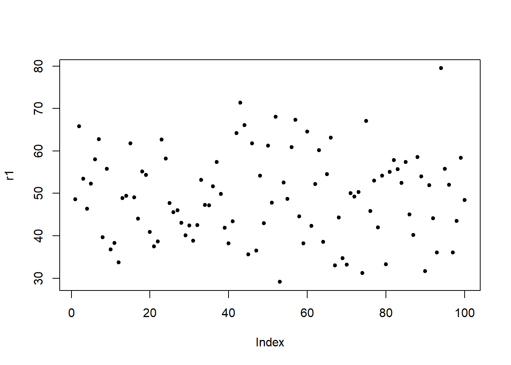
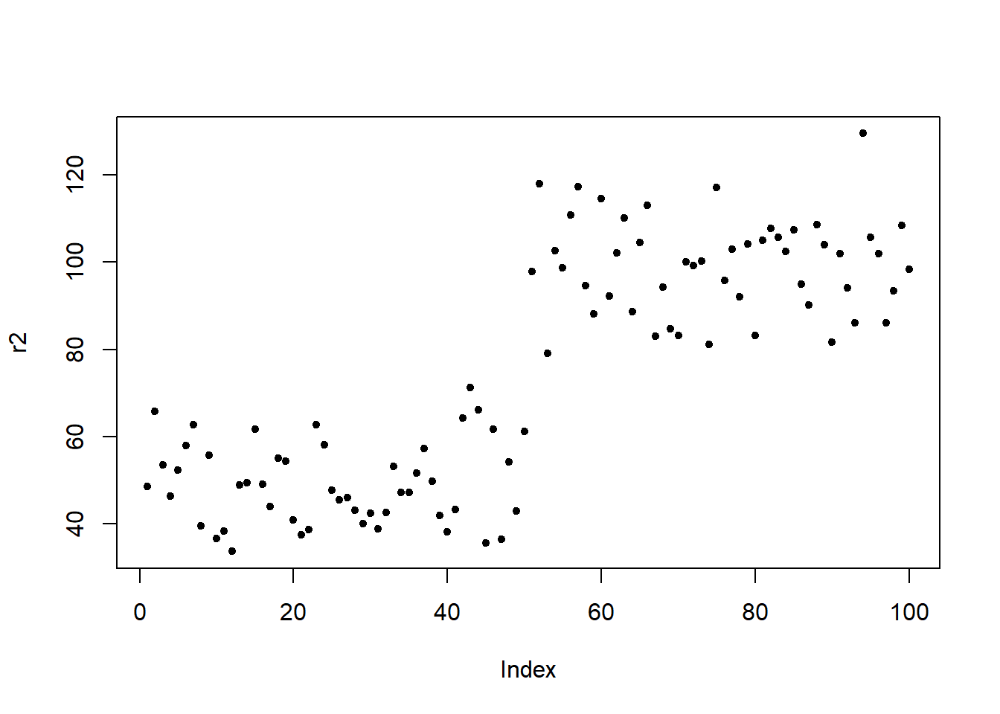

What does multicollinearity mean?
Martin Schweinberger
2022-05-21

Introduction
During the workshop on mixed-effects modeling, we talked about (multi-)collinearity and Jorge González Alonso asked if collinearity reflected shared variance (what I thought) or predictability of variables (what Jorge thought).
Well, we are both right.
(Multi-)collinearity is defined as the correlation between predictors. (Multi-)collinearity is a problem because which predictor is reported as being significant depends on the presence of other predictors in the model.
Because (multi-)collinearity represents a correlation between predictors, it reflects the predictability of predictors based on the values of other predictors. This correlation or predictability is a problem because when predictors correlate, the variance that they explain overlaps which results in unstable models. The instability occurs because what the model reports as significant depends on the presence of other predictors.
To test this, I generate a data set with 4 independent variables
a, b, c, and d. And
the data set contains two potential response variables r1
(which is random) and r2 (where the first 50 data points
are the same as in r1 but for the second 50 data points I
have added 50 to the data points 51 to 100 from r1). This
means that the predictors a and d should both strongly correlate with
r2 an effect for
# load packages
library(tidyverse)
library(rms)
# create data set
# responses
# 100 random numbers
r1 <- rnorm(100, 50, 10)
# 50 smaller + 50 larger numbers
r2 <- c(r1[1:50], r1[51:100] + 50)
# predictors
a <- c(rep("1", 50), rep ("0", 50))
b <- rep(c(rep("1", 25), rep ("0", 25)), 2)
c <- rep(c(rep("1", 10), rep("0", 10)), 5)
d <- c(rep("1", 47), rep ("0", 3), rep ("0", 47), rep ("1", 3))
# create data set
df <- data.frame(r1, r2, a, b, c, d)| r1 | r2 | a | b | c | d |
|---|---|---|---|---|---|
| 48.59422 | 48.59422 | 1 | 1 | 1 | 1 |
| 65.79236 | 65.79236 | 1 | 1 | 1 | 1 |
| 53.45419 | 53.45419 | 1 | 1 | 1 | 1 |
| 46.38967 | 46.38967 | 1 | 1 | 1 | 1 |
| 52.26846 | 52.26846 | 1 | 1 | 1 | 1 |
| 58.02717 | 58.02717 | 1 | 1 | 1 | 1 |
| 62.72414 | 62.72414 | 1 | 1 | 1 | 1 |
| 39.59852 | 39.59852 | 1 | 1 | 1 | 1 |
| 55.78948 | 55.78948 | 1 | 1 | 1 | 1 |
| 36.73158 | 36.73158 | 1 | 1 | 1 | 1 |
Here are the visualizations of r1 and r2

1 Fit first model
Now, I fit a first model. As the response is random, we do not expect any of the predictors to have a significant effect and we expect the R2 to be rather low.
m1 <- lm(r1 ~ a + b + c + d, data = df)
# inspect model
summary(m1)##
## Call:
## lm(formula = r1 ~ a + b + c + d, data = df)
##
## Residuals:
## Min 1Q Median 3Q Max
## -20.0505 -7.5494 0.1764 6.4199 30.3369
##
## Coefficients:
## Estimate Std. Error t value Pr(>|t|)
## (Intercept) 49.15642 2.06169 23.843 <2e-16 ***
## a1 0.84627 4.59899 0.184 0.854
## b1 0.02583 2.10097 0.012 0.990
## c1 0.63210 2.19142 0.288 0.774
## d1 -1.23103 4.52056 -0.272 0.786
## ---
## Signif. codes: 0 '***' 0.001 '**' 0.01 '*' 0.05 '.' 0.1 ' ' 1
##
## Residual standard error: 10.5 on 95 degrees of freedom
## Multiple R-squared: 0.002113, Adjusted R-squared: -0.0399
## F-statistic: 0.05028 on 4 and 95 DF, p-value: 0.9952We now check for (multi-)collinearity using the vif
function from the rms package. Variables a and
d should have high variance inflation factor values
(vif-values) because they overlap very much!
# extract vifs
rms::vif(m1)## a1 b1 c1 d1
## 4.791667 1.000000 1.087963 4.629630Variables a and d do indeed have high
vif-values.
We now fit a second model to the response which has higher values for
the latter part of the response. Both a and d
strongly correlate with the response. But because
a and d are collinear, d should
not be reported as being significant by the model. The R2 of
the model should be rather high (given the correlation between the
response r2 and a and d).
m2 <- lm(r2 ~ a + b + c + d, data = df)
# inspect model
summary(m2)##
## Call:
## lm(formula = r2 ~ a + b + c + d, data = df)
##
## Residuals:
## Min 1Q Median 3Q Max
## -20.0505 -7.5494 0.1764 6.4199 30.3369
##
## Coefficients:
## Estimate Std. Error t value Pr(>|t|)
## (Intercept) 99.15642 2.06169 48.095 <2e-16 ***
## a1 -49.15373 4.59899 -10.688 <2e-16 ***
## b1 0.02583 2.10097 0.012 0.990
## c1 0.63210 2.19142 0.288 0.774
## d1 -1.23103 4.52056 -0.272 0.786
## ---
## Signif. codes: 0 '***' 0.001 '**' 0.01 '*' 0.05 '.' 0.1 ' ' 1
##
## Residual standard error: 10.5 on 95 degrees of freedom
## Multiple R-squared: 0.8569, Adjusted R-squared: 0.8509
## F-statistic: 142.3 on 4 and 95 DF, p-value: < 2.2e-16As predicted, d is not reported as being significant by
the model. We look at a model without a which should cause
d to be significant.
m3 <- lm(r2 ~ b + c + d, data = df)
# inspect model
summary(m3)##
## Call:
## lm(formula = r2 ~ b + c + d, data = df)
##
## Residuals:
## Min 1Q Median 3Q Max
## -50.424 -9.935 -1.220 9.451 53.190
##
## Coefficients:
## Estimate Std. Error t value Pr(>|t|)
## (Intercept) 99.15642 3.04371 32.578 <2e-16 ***
## b1 0.02583 3.10169 0.008 0.9934
## c1 -5.77926 3.11166 -1.857 0.0663 .
## d1 -43.97340 3.11166 -14.132 <2e-16 ***
## ---
## Signif. codes: 0 '***' 0.001 '**' 0.01 '*' 0.05 '.' 0.1 ' ' 1
##
## Residual standard error: 15.51 on 96 degrees of freedom
## Multiple R-squared: 0.6849, Adjusted R-squared: 0.6751
## F-statistic: 69.56 on 3 and 96 DF, p-value: < 2.2e-16As we suspected, now, d is reported as being significant
by the model. We return to m2 and extract the
vif-values.
# extract vifs
rms::vif(m2)## a1 b1 c1 d1
## 4.791667 1.000000 1.087963 4.629630The vif-values are identical which shows that what matters is if the variables are predictable. To understand how we arrive at vif-values, we inspect the model matrix.
# inspect model matrix
mm <- model.matrix(m2)| (Intercept) | a1 | b1 | c1 | d1 |
|---|---|---|---|---|
| 1 | 1 | 1 | 1 | 1 |
| 1 | 1 | 1 | 1 | 1 |
| 1 | 1 | 1 | 1 | 1 |
| 1 | 1 | 1 | 1 | 1 |
| 1 | 1 | 1 | 1 | 1 |
| 1 | 1 | 1 | 1 | 1 |
| 1 | 1 | 1 | 1 | 1 |
| 1 | 1 | 1 | 1 | 1 |
| 1 | 1 | 1 | 1 | 1 |
| 1 | 1 | 1 | 1 | 1 |
| 1 | 1 | 1 | 0 | 1 |
| 1 | 1 | 1 | 0 | 1 |
| 1 | 1 | 1 | 0 | 1 |
| 1 | 1 | 1 | 0 | 1 |
| 1 | 1 | 1 | 0 | 1 |
We now fit a linear model in which we predict d from the
other predictors in the model matrix.
mt <- lm(mm[,5] ~ mm[,1:4])
summary(mt)$r.squared## [1] 0.784The R2 shows that the values of d are
explained to 78.4 percent by the values of the other predictors in the
model.
Now, we can write a function (taken from Gries (2021)) that converts this R2 value into a vif-value.
R2.to.VIF <- function(some.modelmatrix.r2) {
return(1/(1-some.modelmatrix.r2)) }
R2.to.VIF(0.784)## [1] 4.62963The function outputs the vif-value of d. This shows that
the vif-value of d represents its predictability from the
other predictors in the model matrix and not the amount of shared
variance (as I thought).
Citation & Session Info
Schweinberger, Martin. 2022. What does multicollinearity mean?. Tromsø: The Artic University of Norway. url: https://slcladal.github.io/mcol.html (Version 2022.05.21).
@manual{schweinberger2022mmws,
author = {Schweinberger, Martin},
title = {What does multicollinearity mean?},
note = {https://slcladal.github.io/mcol.html},
year = {2021},
organization = "Arctic University of Norway, AcqVA Aurora Center},
address = {Tromsø},
edition = {2022.05.21}
}sessionInfo()## R version 4.2.0 (2022-04-22 ucrt)
## Platform: x86_64-w64-mingw32/x64 (64-bit)
## Running under: Windows 10 x64 (build 19043)
##
## Matrix products: default
##
## locale:
## [1] LC_COLLATE=German_Germany.utf8 LC_CTYPE=German_Germany.utf8
## [3] LC_MONETARY=German_Germany.utf8 LC_NUMERIC=C
## [5] LC_TIME=German_Germany.utf8
##
## attached base packages:
## [1] stats graphics grDevices datasets utils methods base
##
## other attached packages:
## [1] rms_6.3-0 SparseM_1.81 Hmisc_4.7-0 Formula_1.2-4
## [5] survival_3.3-1 lattice_0.20-45 forcats_0.5.1 stringr_1.4.0
## [9] dplyr_1.0.9 purrr_0.3.4 readr_2.1.2 tidyr_1.2.0
## [13] tibble_3.1.7 ggplot2_3.3.6 tidyverse_1.3.1 DT_0.22
## [17] kableExtra_1.3.4 knitr_1.39
##
## loaded via a namespace (and not attached):
## [1] nlme_3.1-157 fs_1.5.2 lubridate_1.8.0
## [4] webshot_0.5.3 RColorBrewer_1.1-3 httr_1.4.3
## [7] tools_4.2.0 backports_1.4.1 bslib_0.3.1
## [10] utf8_1.2.2 R6_2.5.1 rpart_4.1.16
## [13] DBI_1.1.2 colorspace_2.0-3 nnet_7.3-17
## [16] withr_2.5.0 tidyselect_1.1.2 gridExtra_2.3
## [19] compiler_4.2.0 quantreg_5.93 cli_3.3.0
## [22] rvest_1.0.2 htmlTable_2.4.0 xml2_1.3.3
## [25] sandwich_3.0-1 sass_0.4.1 scales_1.2.0
## [28] checkmate_2.1.0 mvtnorm_1.1-3 polspline_1.1.20
## [31] systemfonts_1.0.4 digest_0.6.29 foreign_0.8-82
## [34] rmarkdown_2.14 svglite_2.1.0 base64enc_0.1-3
## [37] jpeg_0.1-9 pkgconfig_2.0.3 htmltools_0.5.2
## [40] dbplyr_2.1.1 fastmap_1.1.0 highr_0.9
## [43] htmlwidgets_1.5.4 rlang_1.0.2 readxl_1.4.0
## [46] rstudioapi_0.13 jquerylib_0.1.4 generics_0.1.2
## [49] zoo_1.8-10 jsonlite_1.8.0 magrittr_2.0.3
## [52] Matrix_1.4-1 munsell_0.5.0 fansi_1.0.3
## [55] lifecycle_1.0.1 multcomp_1.4-19 stringi_1.7.6
## [58] yaml_2.3.5 MASS_7.3-56 grid_4.2.0
## [61] crayon_1.5.1 haven_2.5.0 splines_4.2.0
## [64] hms_1.1.1 pillar_1.7.0 codetools_0.2-18
## [67] reprex_2.0.1 glue_1.6.2 evaluate_0.15
## [70] latticeExtra_0.6-29 data.table_1.14.2 renv_0.15.4
## [73] modelr_0.1.8 png_0.1-7 vctrs_0.4.1
## [76] tzdb_0.3.0 MatrixModels_0.5-0 cellranger_1.1.0
## [79] gtable_0.3.0 assertthat_0.2.1 xfun_0.30
## [82] broom_0.8.0 viridisLite_0.4.0 cluster_2.1.3
## [85] TH.data_1.1-1 ellipsis_0.3.2